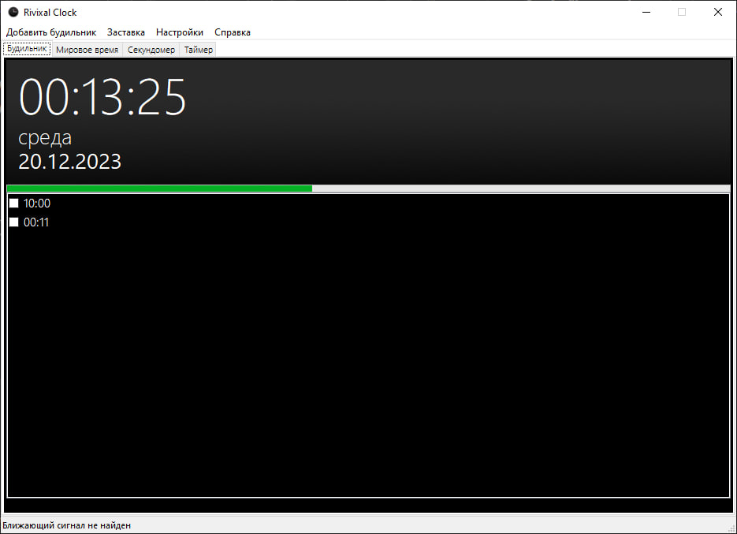
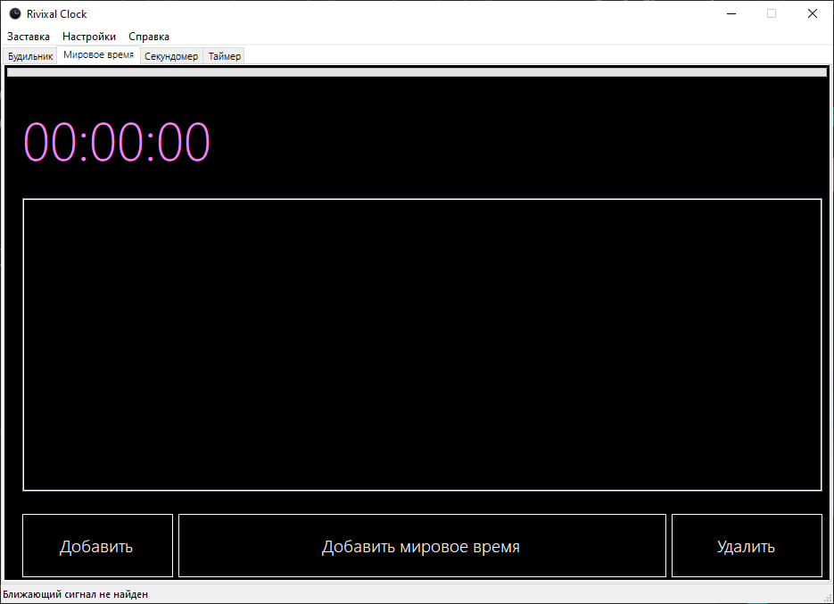
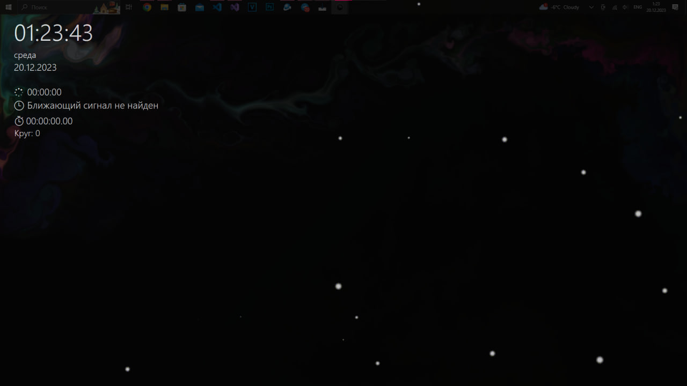
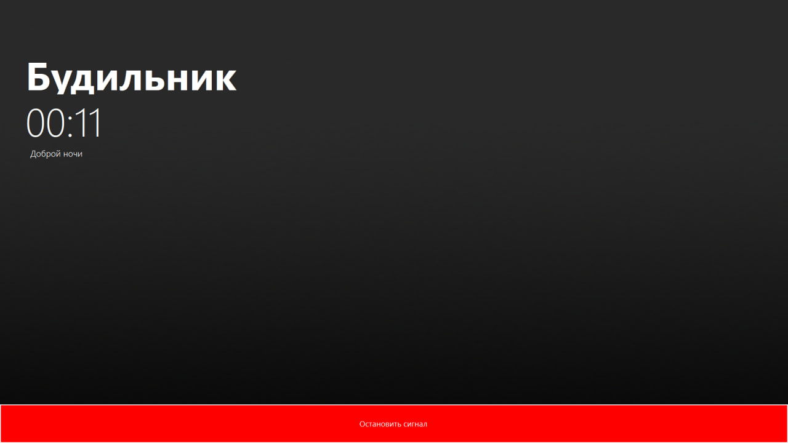
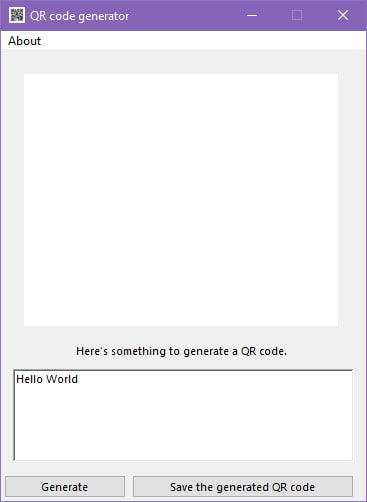
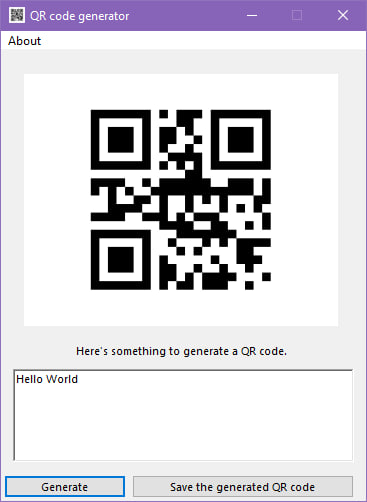
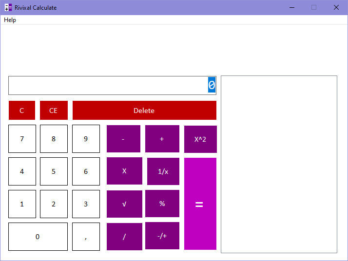

Мои проекты
На этой странице вы можете ознакомиться с моими проектами и узнать о последних обновлениях.
Некоторые программы при скачиваний могут ругаться на наличие вирусов, хотя они их не имеют.
Вы можете написать ЛС в Telegram
О индексах в релизах
Rivixal Clock
Версия: 2.0.2.0 Official Release
Часы имеют стандартный функционал такие как (Будильник, часы, мировое время, таймер).

QR Code Generator
Версия: 1.0 Official Release
Простейший инструмент для преобразования текста в QR код
Rivixal Calc
Версия: 1.0 Official Release
Обычный стандартный калькулятор
Индескы и их обозначения
Статья была созданна в 09/03/2024 Время 23:45
Небольшое обновление релизов
Мы решили с нуля изменить индексы и полностью переделать индексы версии, раньше у нас было OR, BR, CBR, AR, LBR. А теперь Official Release, Beta Deployment, Closed Beta Rollout, Alpha Deployment, Pre-Launch Preview.
Официальный релиз (Official Release)
Официальный релиз обозначает окончательный выпуск программного продукта или приложения, который считается стабильным и готовым к использованию. Он выпускается после тщательного тестирования и отладки всех функций.
Бета развертывание (Beta Deployment)
Бета развертывание обозначает версию программного продукта или приложения, которая доступна для тестирования, но еще не является окончательной. В бета-версии могут быть обнаружены ошибки и недоработки, которые будут исправлены в последующих версиях.
Закрытый выпуск бета-версии (Closed Beta Rollout)
Закрытый выпуск бета-версии обозначает версию программного продукта или приложения, доступную только определенной группе пользователей для тестирования. Закрытый выпуск бета-версии позволяет разработчикам получить обратную связь от выбранной группы пользователей, которые могут использовать продукт в реальных условиях.
Альфа развертывание (Alpha Deployment)
Альфа развертывание обозначает версию программного продукта или приложения, находящуюся на стадии разработки и тестирования. Альфа-версия может содержать множество ошибок и недоработок, так как она еще не прошла полный цикл тестирования.
Предварительный просмотр перед запуском (Pre-Launch Preview)
Предварительный просмотр перед запуском обозначает процесс предварительного ознакомления с продуктом или приложением до его официального запуска. В рамках этого просмотра пользователи могут оценить основные функции и интерфейс продукта, а также предоставить обратную связь разработчикам.
Rivixal Clock 2.0.2.0 Official Release
Rivixal Clock
Простые часы с функциями будильника, мирового времени, секундомера и таймера
О приложений
download
Скачать официальную версию
Версия: 2.0.2.0 Official Release
download
Скачать старую версию
Версия: 1.0 Official Release
frame_source
Исходный код
Можете посмотреть и сделать свой форк, или помочь мне выпускать обновление как можно чаще.
Список изменений Rivixal Clock 2.0.2.0
Главный интерфейс
-
Новый взгляд на создание будильников
Теперь доступно окно для создания будильников с возможностью устанавливать повтор по дням недели и одноразовые напоминания.

-
Обновленный интерфейс сигналов будильника
Мы обновили интерфейс сигналов будильника и добавили аналоговые часы для эстетики.

-
Рингтоны
В Rivixal Clock вы найдете 13 рингтонов, из которых можно выбрать любой на ваш вкус.
-
Новый вид выбора часового пояса
Теперь вы можете выбрать часовой пояс из списка.

Настройки

-
Смена стиля часов
Теперь можно менять циферблат на аналоговый, цифровой или использовать оба варианта одновременно.
-
Выбор языка
На данный момент доступны два языка: английский и русский. В будущем планируется добавить много других языков.
-
Вид таймера
Теперь вы можете выбрать оформление таймера: в виде колеса или прогресс-бара.
Вид отображения сигналов

-
Пауза
Теперь при срабатывании будильника вы можете ставить сигнал на паузу на 9 минут.
-
Оптимизация сигналов
Пользователи Rivixal Clock 1.0 могут помнить проблемы с мерцанием сигналов. Теперь экран больше не мерцает при их появлении.
Другое
-
Новый скринсейвер
Мы полностью переработали скринсейвер. Теперь вы можете установить его, просто изменив расширение файла на *.scr.

-
Обновление по воздуху (OTA)
Теперь вы можете обновить программу до последней версии. Для этого потребуются права администратора, иначе возникнет ошибка с webclient.

Список изменений Rivixal Clock 1.0
- Будильник: Установите будильник, чтобы не пропустить важные события. 
- Мировое время: Отслеживайте время в различных часовых поясах мира. 
- Секундомер: Используйте секундомер для точного измерения времени.
- Таймер: Установите таймер на нужное количество времени и получите уведомление по истечении.
- Заставка: Вы можете оставить заставку включенным и отправиться ко сну 
- Программа не уйдет в спящий режим, до тех пор, пока приложение не будет закрыта
- Если таймер все еще работает, то вы не сможете закрыть программу до тех пор, пока вы не остановите таймер или пока таймер не закончится
- Будильник умеет подстраиваться под текущие времена суток под утро, день, вечер и ночь. 


QR Code Generator 1.0 Official Release
QR Code Generator 1.0
Простейший инструмент для преобразования текста в QR код
О приложений
Скачать
arrow_forward_ios
Перейти к репозиторию в Github
arrow_forward_ios
Инструкция
- Напишите любой текст 
- И нажмите на Generate 
- И потом можете сохранять ваш QR код
Rivixal Calc 1.0 Official Release
Rivixal Calc 1.0
Обычный стандартный калькулятор
Скачать
arrow_forward_ios
Перейти к репозиторию в Github
arrow_forward_ios
Список изменений
- Это самый простой калькулятор который был разработан в колледже 